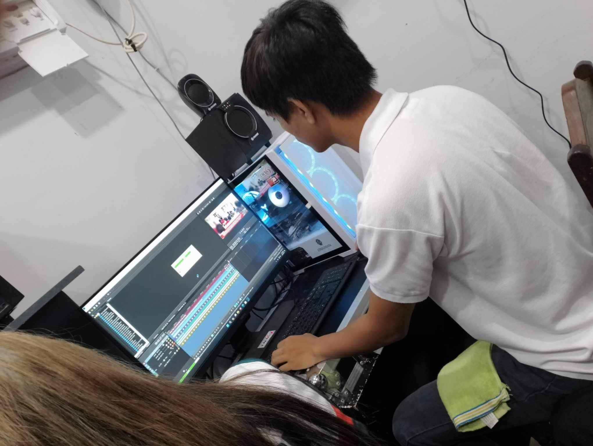

During my OJT at TNTV6, I had the incredible opportunity to dive deep into the world of video editing, videography, and photoshoots. This blog serves as a detailed account of my journey, highlighting the skills I developed, the challenges I overcame, and the creative projects I contributed to. My experience allowed me to blend technical expertise with artistic expression, making every day an exciting learning experience.
One of the most exciting aspects of my OJT was working on various video editing projects. I was tasked with editing promotional videos, client testimonials, and internal training materials. Each project had its unique style and requirements, pushing me to be both precise and creative. From selecting the perfect cuts to applying color correction and adding transitions, I honed my editing skills and learned how to bring out the best in the footage. Collaborating with the creative team also taught me the importance of clear communication and feedback in the editing process.
In addition to editing, I spent a significant amount of time behind the camera. Whether it was shooting a product demo, capturing interviews, or setting up a photoshoot for a marketing campaign, I was deeply involved in the production process. I learned how to frame shots, manage lighting, and direct subjects to get the best results. Working on-location and in the studio provided a well-rounded experience, and I became comfortable with both spontaneous shooting environments and meticulously planned setups. The hands-on experience with professional equipment was invaluable, and I found myself growing more confident in my abilities with each project.
As I neared the end of my OJT, I compiled a final report that captured the breadth of my experience. Reflecting on my time at TNTV6, I could see how much I had grown as both a videographer and an editor. The projects I worked on not only enhanced my technical skills but also deepened my understanding of storytelling through visual media. In my final assessment, I highlighted the key projects I contributed to, the skills I developed, and the areas where I plan to continue improving. This experience has solidified my passion for video production, and I’m excited to take these skills forward into my future career.